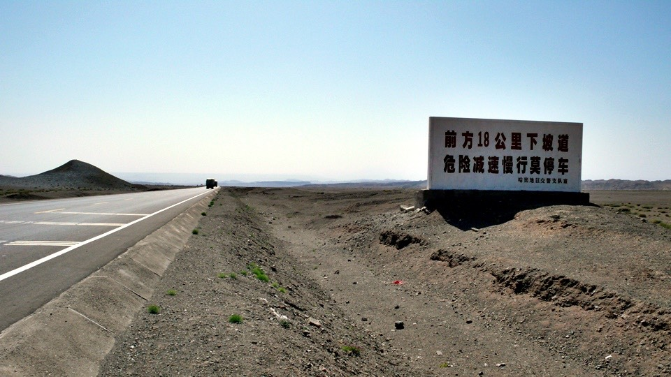
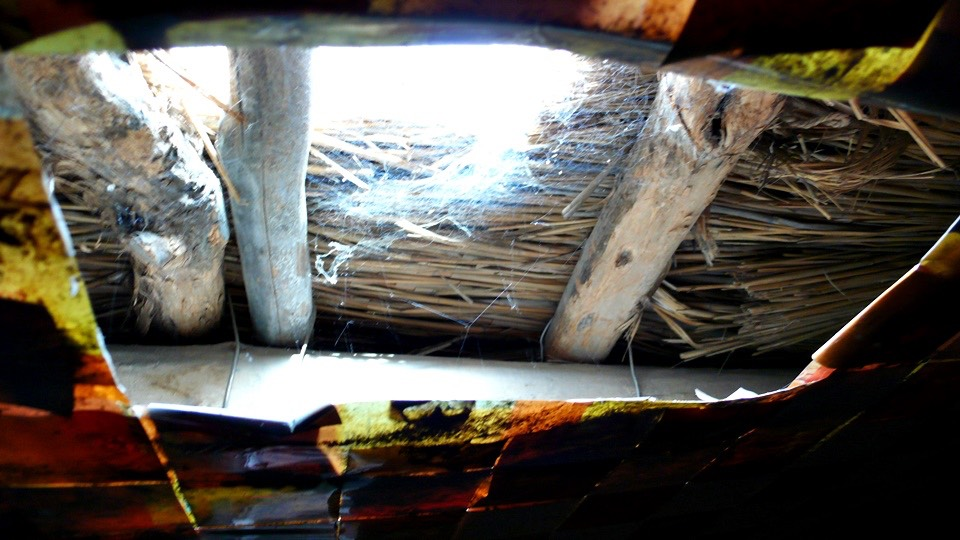

Since June, the sunshine is getting stronger everyday when I wake up, while the weather is getting warmer as well.
Today is still a day with almost no wind. The hot air around me seems concreted.
Staying in such a dry environment, the sweat is supposed to vaporized before sweat.
However I’ve been riding sweaty in these days. You can imagine that the sweat is so much.
Finishing the county route 502 in the morning means I’ve left the Sandauling already.
Connecting back to the national highway 312 and I headed for the destination of today, the Hongshankou.
Hongshankou is actually a tiny spot which is not even found on the map.
However, during the ride for more than one hundred kilometers,
Hongshankou is the only place to provide food and accommodation for me.
I didn’t have my breakfast in downtown.
I started the trip and ate some chocolate pies and cookies as the breakfast.
When I flipped my bags for the cookies, I found that the fruit I bought yesterday,
due to the high temperature, has turned from green…
…to red and yellow and soft. It is too pity to give up it, so I started eating these over-matured nuts.
My right hand became sticky after finishing these nuts.
By the way, It’s not an overcrow, I have no any problem with my stomach after eating these fruits.
There are some meaningless white color statues put on the road. Horse, sheep, and dinosaur…
Although meaningless, I still took a picture for memory.
I had my lunch at the roadside restaurant in which the last human being could be seen before I enter the Tienshan Mountains.
I ordered a dish of fried pork with bean to match the farina balls.
Before the food is provided, I used to sit by the door for the wind. But at this moment there was no wind at all.
Instead, the bothering flies just went on bothering my rest time. So I obediently went back into the restaurant to wait for the food.
The fried pork with bean was delicious. I felt I haven’t had it for a long time.
Matching the big and fat farina balls, this lunch is quite good.
Staying in the restaurant, I was looking at the Dido’s shadow getting shorter under the sunshine.
The sun was on the top of the sky and the weather was really hot.
My watch thermometer showed that the current temperature was 37.4 degree centigrade.
The restaurant is not a place to stay for a lifetime.
I drank all the water in both bottles, and re-filled them up from the restaurant’s hot water bottle.
I just thought that I’m well prepared, then the boss questioned that the water I bring with me is not enough.
Oh my god…what kind of the road is that I would be facing? How much water should be “enough” to me?
Riding forty kilometers of slightly uphill from the restaurant,
and then a continuous eight kilometers of uphill when I came into the mountains.
When I arrived the top of this section, I could enjoy another continuous eighteen kilometers of downhill.

The scenery of the uphill and the downhill are beautiful.
It looks like the portrait, and it expends alongside the national highway.
The hills on two sides are not quite high, yet the geology is very special.

There are big rocks, desert hills, bluffs and cliffs. My eyes were busy.
Three departure camels were eating the dry and yellow grass looks hard to eat.
Ropes tightened their front legs, possibly to prevent them from running too far. A little bit pity.
The downhill section is more dangerous. The highly loading trucks were running very slow to avoid getting out of the highway.
So I was overtaking the trucks one by one. I could ride more than fifty kilometers per hour at the fastest.
The road was well maintained, so it is not afraid to fall off by the holes.
I heard that the section between Sandauling and Hongshankou is the wind tunnel of Tienshan Mountain.
However, after a whole day riding, I didn’t feel windy very much. Yet it was really super hot.
When I saw some beautiful scenery and felt not satisfied enough only by stopping the bike to watch it,
I would hand Dido and left the highway for photos.
Setting the camera onto the ten second self-timer mode. To catch the moment of my jump precisely,
I jumped no less than twenty times to get this ordinary picture.
On the brisk downhill section, I saw a light beige-colored area far from me, which is not matched with the scenery around.
I thought it was a desert so I rode towards it for fun.
When I came closer to it, I found that it was not the sand.
Judging from the shape of the edges and from the dry and broken surface, this is just like the fossil of a lake.
Maybe this place had been a snow water oasis. However it has been dry completely.
A deep sadness that is not able for any grass to grow up.
I circled around the dry lake by my bike, looking at the present face of the lake,
and tried to imagine its clear water and lively in the past.
We could look at the fossil of the lake, and imagine its manner in the past.
Just change a point of view. Please look at the environment we live.
It is still beautiful currently, but its future might be the same with this lake: Dead silence only.
I raised the “Bike To Protect Our Planet” banner here in this place.
If this picture really makes any sense to you, please start from yourself and do some thing
that you wouldn’t regret in the future for the earth, for yourself, and for your beloved families.
My power is small, and my sound is even smaller.
But I expect to express my thought to you who live together with me on the planet.
Let’s care about the issue of the global warming.
Beyond merely care, you can exploit your influence and action, to help the earth decreasing the temperature.
When I left the lake fossil, I found that I was a little bit stupid to leave the main road this way.
In order to climb back to the road, I slipped and dropped for several time and spent a long time to go back.
Unfortunately, I saw again something flying by the road with oozing sound.
It’s again the poor bees left on the desert from the bee’s net on the raisers’ truck. Nick name to be “desert bee”.
The three bulges on my brow were not flattened yet, while I still remember the big pain at the moment the bees stung me.
Now the desert bees appeared again! And it was more than last time along the road.
Learning from last time, I know that it would be probably fine if I don’t anger them.
Should I be fine if I just ride and pass them silently?
Climbing on the sharp ascent which is the last two kilometers to Hongshankou, nevertheless,
the desert bees noticed me and started flying around me.
They were oozing and kept hitting everywhere on me. From the face, the head, the eye glasses,
the ears, the hands, the body, to the legs.
Although I was panic, I still told myself not to expel them. It would be bad if they were angry again.
Three or four bees were clambering on me, and I didn’t dare to banish them.
Just left them clambering on my clothes. To get away from the ascending as soon as possible,
I couldn’t ride easily, and were pushing hard until my legs felt pain. I arrived the top of the hill in the end, and…
… tried to slip away from the bees by the higher speed on the descending section.
The plan worked for a while. The bees couldn’t catch up with me and were all left behind.
But, during the sliding, I saw the beautiful scenery and I braked hard to stop for photo,
forgetting that the threat has still not been disengaged.
The desert bees caught up with me at this moment and surrounded me again.
They seemed discover my intention to escape, and seemed become more irritable, but luckily I was not stung this time.
I slided down the slope to the Hongshankou. This is a place no bigger than a peanut, and no wonder it is not indicated on the map.
A small town like the Xingxingxia could be called a city compared with the Hongshankou.
I was shocked by the loud voice of the restaurant staff when I just arrived at Hongshankou.
The staff waived his hand to call me. I said I would find a place to stay over night and have the dinner later.
Actually it provides hospitality right here and charges ten dollars each night.
Finally I could hide into a house to stay away from the annoying desert bees.
I told the staff that there are lots of bees and they sting, so please put me into the house as soon as possible.
But, since I was with Dido, I wasn’t able to get in the front door, and had to detour by the back door.
The staff said “It’s OK. The bees don’t sting” with ease.” But right after his words…
”Ouch! It hurts!” A damn bee stung my left ear again. It really hurts, so I pasted the bee with its thorn left on my ear.
The staff saw me stung and realized that this is not kidding,
and then called me to get in the house with Dido by the back door. I rushed into the house and disengaged the crisis.
I used to think that wild dogs are the major threat to bike tourists, and I even took the injection to prevent from the rabies.
The result was unpredictable and I have been stung by the bees for four bulges already.
That pain, if I could give a solid expression, is just a kind of burning feel like a fire-heated wire penetrating into the body.
One more sting, I would definitely look for the mosquito net cap that the bee raisers wear when I go to the town.
This restaurant and hotel is pretty cool that the room is small and basically clean. But there is no power supply until the night.
In the dark room, the only lighting is a hole on the ceiling to derive the sunlight.

I flipped my bags and took the socks out that I washed yesterday and put in a plastic bag,
to air-dry them since it was still a bit wet. The socks were warm when I took them out.
The digital camera has been warm for the whole day. I didn’t get the heat stroke in such a hot weather.
The idea of packing me like a bank robber seems not bad.
I took the ewer and towel, and asked for some water to mop my sweat sticky body.
There is no water faucet here, and the water is reserved in the water tank. I asked if this water comes from the well or the snow.
The answer is that the water is not from the local source, and is actually bought.
Driving trucks to buy water and carry it back here, the water here is rare.
I scooped half-full of the ewer. Exercised for a few days,
now half an ewer of water is enough to clean the whole body, plus washing my head.
Another half ewer of water could treat from the relatively clean headscarf down to the socks, to wash the sweat and sand away.
Totally a ewer of water can finish all the refreshing and laundry, while the remaining water can be used to knead the dirty shoes.
Not any drop of water would be wasted.
The logistics is quite difficult in such far places. Anywhere else is more than one hundred kilometers from Hongshankou,
and thus the product pricing here is relatively higher.
It should be this way. I fully understand that the prices of the coke in downtown and in the desert should be different.
And I’m glad to let the hotel staff to earn that money.
The weak small light finally lighted up after nine o’clock in the night.
Many of my equipments have to work normally by recharging,
and no power supply is actually the same troublesome like no water to drink.
There are some raised chickens walking around outside, and there are two timid kitties in the house.
I put a lot of effort to wheedle them out of the house for photo.
I had my dinner of egg-fried rice and the twice-cooked pork here. The staff all come from Chungching.
I came for the dinner at nine thirty p.m. and I thought I was late. Actually I was the first one to have the dinner.
At this time the sun was just about to set. The sky was still bright and it was really not like 9:30 p.m.
I asked them when they normally take their dinners.
They just answered, “It’s still very early!” Their exact dinnertime is still unknown.
Adding the pickled bean into the twice-cooked pork, it tasted quite salty.
After a sweat day, I took this chance to get some salt back. I combined the sauce in the fried rice and finished them all.
After the dinner I wipe some mentholatum ointment on my left ear as well as the brow.
Tomorrow I am supposed to arrive the big city “Shanshan”. I hope there will be no more bee attack. God bless me.